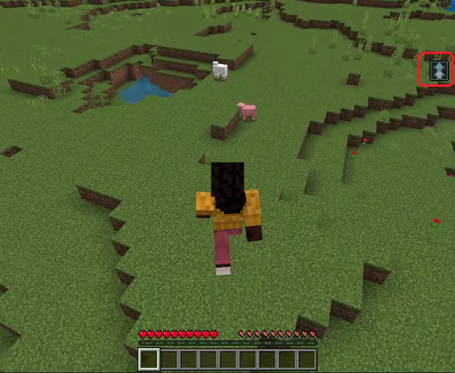
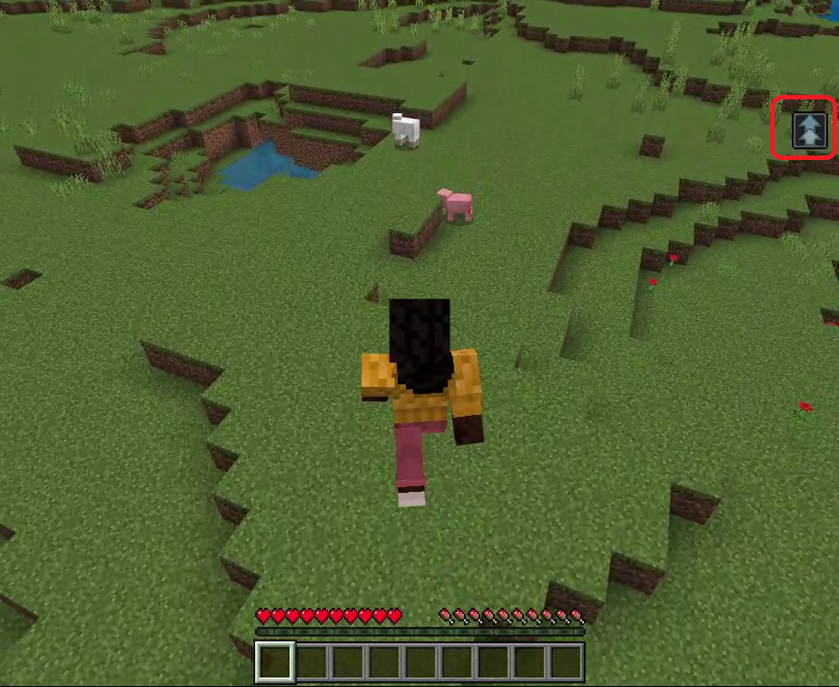

【二段ジャンプ】
はじめに
以下の画面のように２回目のジャンプボタンで二段ジャンプが発動します。
（再生マークが付いている画像をクリックすると再生／停止が行えます）

一度ジャンプして着地するかしないかのタイミングで以下のように画面右端にガイドが表示されます（赤枠の部分）。
そのタイミングでもう一度ジャンプボタンを押すと発動します。

※特別なアイテムは使用していませんが通信量を減らすため
（再生マークが付いている画像をクリックすると再生／停止が行えます）
一度ジャンプして着地するかしないかのタイミングで以下のように画面右端にガイドが表示されます（赤枠の部分）。
そのタイミングでもう一度ジャンプボタンを押すと発動します。

※特別なアイテムは使用していませんが通信量を減らすため
functionコマンドを使用していますのでビヘイビアパックを適用しておく必要があります。サーバー側の実装
今回はジャンプイベントが発生した時に送信される"PlayerTravelled"というサブスクライブイベントを使用しています。
"PlayerTransform"の上位版のようで
※サブスクライブイベントの処理内容については>> こちらでご紹介しています。
ジャンプ時に発生するイベントデータの形式
注意しないといけないのが、この"PlayerTravelled"イベントはジャンプイベントが発生した時に１回だけ発行されるわけではありません。
最初にジャンプイベントが発生したタイミングから着地するまでの間はプレイヤーの移動距離に応じて複数回イベントが発生しています。
このような性質があるため二段ジャンプを連発し過ぎたり、ジャンプブースト（effectコマンドの設定値）を高く設定し過ぎたりするとラグが発生する事があるので注意が必要です。
イベントを処理するための任意のコマンド名を以下のファイルへ定義します。
app/CommandUnits/CommandQueueEnumForMinecraft.php
コマンド名を以下の場所へ追加して利用可能にします。
app/CommandUnits/CommandForMinecraft.php
コマンド名と処理（関数）の関係を以下のメソッドへ追加して紐づけを行います。
app/CommandUnits/CommandForMinecraft.php
サブスクライブイベントは以下の設定ファイルへ登録します（複数登録可）。
これをいれておく事で、ジャンプ時のイベントを検知してマインクラフトがWebsocketサーバーへイベントデータを送信してくれます。
setting/minecraft.php
今回は二段ジャンプ用の設定値も用意しています。
詳細は以下の通り。
setting/minecraft.php
みなし移動量
受信したイベントデータをコマンド名へ変換する処理を以下のコマンドディスパッチャーへ追加します。
app/InitClass/InitForMinecraft.php
コマンド名に紐づけた以下の処理（関数）を実装します。
app/CommandUnits/CommandForMinecraft.php
"PlayerTransform"の上位版のようで
travelMethodというパラメータ値をみてそのイベントがジャンプイベントなのかそれ以外なのかを判断できるようになっています。※サブスクライブイベントの処理内容については>> こちらでご紹介しています。
ジャンプ時に発生するイベントデータの形式
{
"body":
{
"isUnderwater":<ブール値>,
"metersTravelled":<数字>,
"newBiome":<数字>,
"player":
{
"color":<16進数？>,
"dimension":<数字>,
"id":<数字>,
"name":<文字列>,
"position":
{
"x":<数字>,
"y":<数字>,
"z":<数字>
},
"type":<文字列>,
"variant":<数字>,
"yRot":<数字>
},
"travelMethod":2（ジャンプ）
},
"header":
{
"eventName":"PlayerTravelled",
"messagePurpose":<文字列>,
"version":<数字>
}
}
注意しないといけないのが、この"PlayerTravelled"イベントはジャンプイベントが発生した時に１回だけ発行されるわけではありません。
最初にジャンプイベントが発生したタイミングから着地するまでの間はプレイヤーの移動距離に応じて複数回イベントが発生しています。
このような性質があるため二段ジャンプを連発し過ぎたり、ジャンプブースト（effectコマンドの設定値）を高く設定し過ぎたりするとラグが発生する事があるので注意が必要です。
キューとステータスUNITの登録
イベントを処理するための任意のコマンド名を以下のファイルへ定義します。
app/CommandUnits/CommandQueueEnumForMinecraft.php
case PLAYER_TRAVELLED = 'player_travelled';
コマンド名を以下の場所へ追加して利用可能にします。
app/CommandUnits/CommandForMinecraft.php
protected const QUEUE_LIST = [
CommandQueueEnumForMinecraft::PLAYER_TRAVELLED->value
];
コマンド名と処理（関数）の関係を以下のメソッドへ追加して紐づけを行います。
app/CommandUnits/CommandForMinecraft.php
public function getUnitList(string $p_que): array
{
$ret = [];
・
・
・
if($p_que === CommandQueueEnumForMinecraft::PLAYER_TRAVELLED->value)
{
$ret[] = [
'status' => CommandStatusEnumForMinecraft::START->value,
'unit' => $this->getMinecraftPlayerTravelledStart()
];
}
return $ret;
}
新規実装箇所
サブスクライブイベントは以下の設定ファイルへ登録します（複数登録可）。
これをいれておく事で、ジャンプ時のイベントを検知してマインクラフトがWebsocketサーバーへイベントデータを送信してくれます。
setting/minecraft.php
return [
'subscribe_types' =>
[
'PlayerTravelled'
]
];
今回は二段ジャンプ用の設定値も用意しています。
詳細は以下の通り。
setting/minecraft.php
return [
・
・
・
/**
* @var array 二段ジャンプの設定
*/
'double_jump' =>
[
/**
* @var float ジャンプのみなし移動量（ｍ）
*/
'meter' => 1.21,
/**
* @var float 二段ジャンプのインターバル（秒）
*/
'interval' => 2.3
]
];
みなし移動量
meterは二段ジャンプを開始するとみなす移動量です。例えば垂直に飛べば移動量は少ないですが弧を描くように飛ぶと移動量は増えます。intervalは一度二段ジャンプをみなした時点から再度二段ジャンプをみなすまでのインターバルです。受信したイベントデータをコマンド名へ変換する処理を以下のコマンドディスパッチャーへ追加します。
app/InitClass/InitForMinecraft.php
public function getCommandDispatcher()
{
return function(ParameterForMinecraft $p_param, $p_dat): ?string
{
$minecraft = $p_param->isMinecraft();
if($minecraft === true)
{
・
・
・
if(isset($p_dat['data']['header']['eventName']) && $p_dat['data']['header']['eventName'] === 'PlayerTravelled')
{
$meter = config('minecraft.double_jump.meter');
if($p_dat['data']['body']['travelMethod'] === 2 && $p_dat['data']['body']['metersTravelled'] > $meter)
{
return CommandQueueEnumForMinecraft::PLAYER_TRAVELLED->value;
}
}
・
・
・
}
}
}
コマンド名に紐づけた以下の処理（関数）を実装します。
app/CommandUnits/CommandForMinecraft.php
protected function getMinecraftPlayerTravelledStart()
{
return function(ParameterForMinecraft $p_param): ?string
{
$p_param->logWriter('debug', ['MINECRAFT PLAYER_TRAVELLED:START' => 'START']);
// インターバルタイムの検査
$now_time = microtime(true);
$last_time = $p_param->getTempBuff(['double_jump_time']);
if($last_time !== null)
{
$interval = config('minecraft.double_jump.interval');
if(($now_time - $last_time['double_jump_time']) < $interval)
{
return null;
}
}
// 受信データの取得
$rcv = $p_param->getRecvData();
// コマンド送信
$cmd_data = $p_param->getCommandDataForDoubleJump($rcv['data']['body']['player']['name']);
$data =
[
'data' => $cmd_data
];
$p_param->setSendStack($data);
$p_param->setTempBuff(['double_jump_time' => microtime(true)]);
return null;
};
}